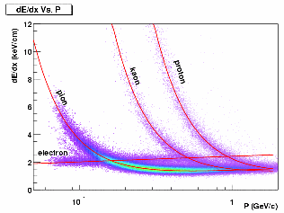
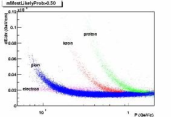
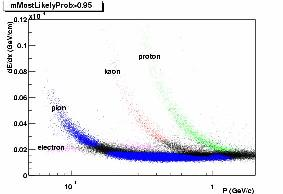
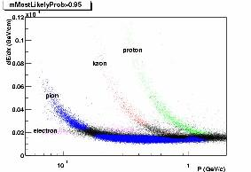

Algorithm
The de/dx~p plots for tracks consists of several individual bands, namely the pion band, the kaon band,the proton band and the electron band. Our task is, given a track with de/dx and rigidity(p/z), figure out wich individual band that track mostly likely belongs to.
To do so, we can try to establish the amplitude for each band. What is the amplitude here? Loosely speaking, the amplitude represents the density of dots on the de/dx~p plot. If you fill de/dx and p into a 2D histogram and draw it as LEGO, the amplitude is the height of each cell on x-y plane. So you can imagine each band as a "ridge". See following graph of reconstructed "ridge" for pion band.
Note that If we cut the "ridge" above at a given rigidity, we will get a gaussian curve.
The picture above shows only the pion band, we can reconstruct all other bands as such "ridge" as well. By putting them together, we have sth. like following(not very clear, but, you got the ideal):
The blue ridge is pion band, the red ridge is kaon band, the green is for proton, the magenta is for electron(such color convention will be used through this document).

The plot above shows amplitudes at band center versus momentum for 4 particle types. The amplitude at band center is the first fit parameter from multiple gaussian fitting. By fitting the amplitudes for band center as a function of momentum, the amplitude from merging area can be estimated.
Then how to get the PID probability? Now surppose we have a track with rigidity(p/z)=0.68, de/dx=0.175e-05(Gev/cm). We make a vertical plane at rigidity=0.68 to cut the picture of Amplitudes Reconstruction, the cross-section we get is sth. like following:
On the plot, the color dash line represents amplitudes due to different band(The gaussian curve from electron band at this rigidity is so tiny that we can just see a flat line). Now we say:
The probability of this track(de/dx=0.175e-05Gev/cm, rigidity=0.68) to be a kaon = height of red dash line / sum of heights from all dash lines
Sounds easy? But in the code we have to do thousands fittings to reach the goal!
Now we can do even better. Let's take a look at de/dx~p plot for different nhits range(nhits=# of tpc hits used in mean de/dx calculation):
The blue area is the overlapping area.The blue areas show that a fuzzy semi-overlapping area in de/dx~p plot for low nhits tracks could come to be clearn area in plot for high nhits tracks. So if we do PID without nhits binning, some signal could be washed out by fuzzy low nhits tracks. The reasonable way is to let high nhits band compete with high nhits band, low nhits band compete with low nhits band, and that is the way we implemented in the package.
{kind=link}
So we have to make nhits bin for PID, The current version of supporting table (/afs/rhic.bnl.gov/star/users/aihong/www/PIDTable.root) is got by bining in the following way:
3 centrality bins: 1__26%__10% central
2 dca bins: 0__3__ centimeter
2 charge bins: -/+
100 momentum bins: 0__2Gev
10 eta bins: 0__1.0 (if >1., belongs to the last bin)
6 ndedx bins: 0__30 (if>30, belongs to the last bin)
So you've got some ideal of the Probability PID algorithm. What the StPidAmpMaker(under revision) does is to produce a set of parameters which can be used to reconstruct those "ridges". The parameters will be read in by StuProbabilityPIDAlgorithm, wich will be constructed in your analysis code. Then StuProbilityPIDAlgorithm reconstructe the expected amplitude and yield the probability PID for each track.
This tool does not take care of deuterons or heavier mass particle types.
Performance
An example of BetheBloch calibration :
{kind=link}
Pid at different confidence level :
{kind=link}


 

{kind=link}
{kind=link}
In the plots above, blue dots represent pion tracks, red -> kaons, green -> protons, magenta -> e+/-, black -> tracks whose probability of the most likehood type is less than 50%/90% (declared as non-identified). The light blue dots are pions in the overlapping area.The StuProbabilityPidAlgorithm can give out a warning flag if a track in the overlapping area is identified. The plots show that as our confidence requirement increase, more tracks becomes non-identified (black), which is as expected.
Tutorial
How to do the PID?
1. In your macro(sth. like doEvents.C):
gSystem->Load("StEvent");
gSystem->Load("StEventUtilities");
2. In your AnyMaker.cxx
#include "StuProbabilityPidAlgorithm.h"
3. In your AnyMaker::Init()
TString parameterfile = "PIDTable.root";
StuProbabilityPidAlgorithm::readParametersFromFile(parameterfile.Data());
4. In your AnyMaker::Make(), somewhere before the track loop begins,
StuProbabilityPidAlgorithm myPID(AnObjectOfStEvent);
5. Inside your track loop,
StParticleDefinition* def=theTrack->pidTraits(myPID); //invoke functor.
if( myPID.getParticleGeantID(0)==3 && myPID.getProbability(0) > 0.9 )
printf("Got an electron at 90% confidence!\n");
Some other functions that might be usefull at this level:
// int mostLikelihoodParticleGeantID() const;
// int secondLikelihoodParticleGeantID() const;
// int thirdLikelihoodParticleGeantID() const;
// int getParticleGeantID(int i) const;
// double getProbability(int i);
// double mostLikelihoodProbability();
// double secondLikelihoodProbability();
// double thirdLikelihoodProbability();
// double beingPionMinusProb() const { return mPionMinusProb;}
// double beingElectronProb() const { return mElectronProb; }
// double beingKaonMinusProb() const { return mKaonMinusProb;}
// double beingAntiProtonProb() const { return mAntiProtonProb;}
// double beingPionPlusProb() const { return mPionPlusProb; }
// double beingPositronProb() const { return mPositronProb; }
// double beingKaonPlusProb() const { return mKaonPlusProb; }
// double beingProtonProb() const { return mProtonProb; }
6. To make it run, a support PID Table named "PIDTable.root" must to be present in your working directory, you can copy it from:
/afs/rhic.bnl.gov/star/users/aihong/www/PIDTable.root
Aihong Tang Last modified: Thu Mar 29 10:53:58 EST 2001